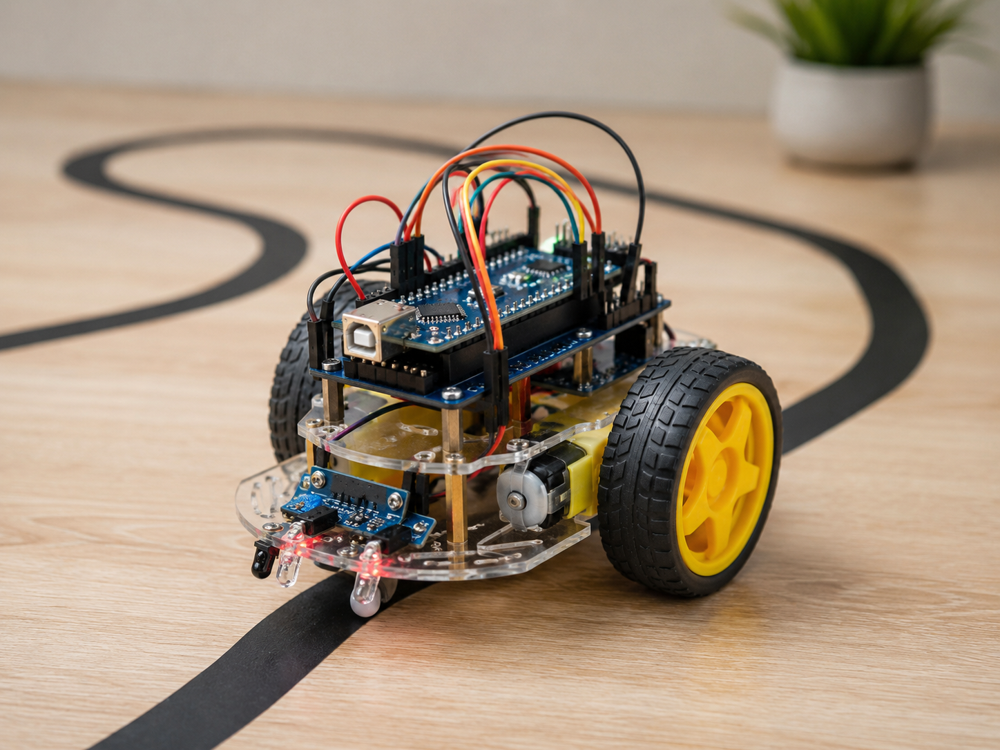

Quy trình thực hành
Chuẩn bị và lắp ráp robot
Chọn mô hình, đối chiếu linh kiện hiện có và thực hiện hướng dẫn theo đúng thứ tự.

Chuẩn bị mô hình
Tiến độ chuẩn bị
0%Quy trình lắp ráp
Tiến độ phía trên phản ánh việc chuẩn bị linh kiện. Khi đã đủ, hãy thực hiện lần lượt các bước bên dưới.
Sơ đồ nối dây theo mẫu đang chọn
Bảng cập nhật theo mẫu robot chọn ở trên. Nối chung GND giữa Arduino, mạch công suất và nguồn trước khi cấp điện.
| Chân Arduino | Nối tới | Ghi chú |
|---|